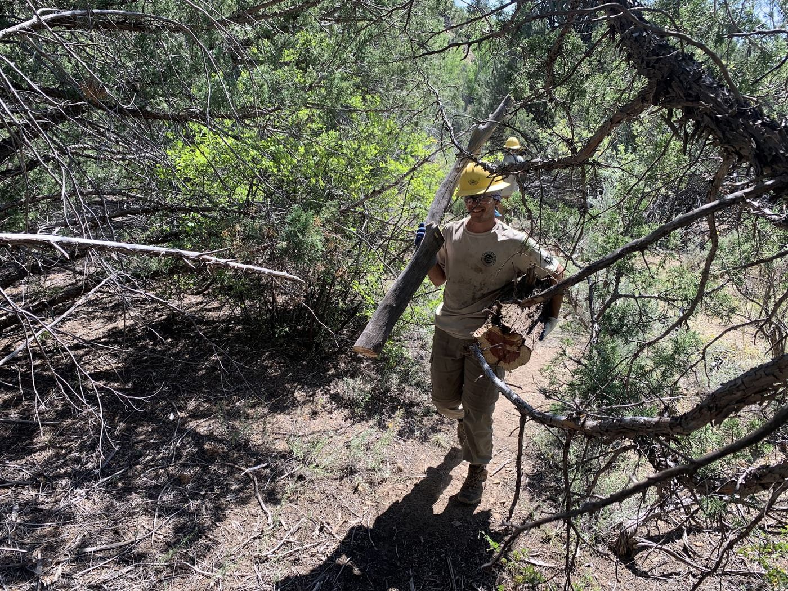
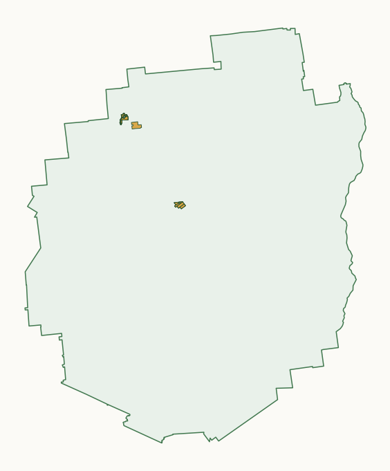
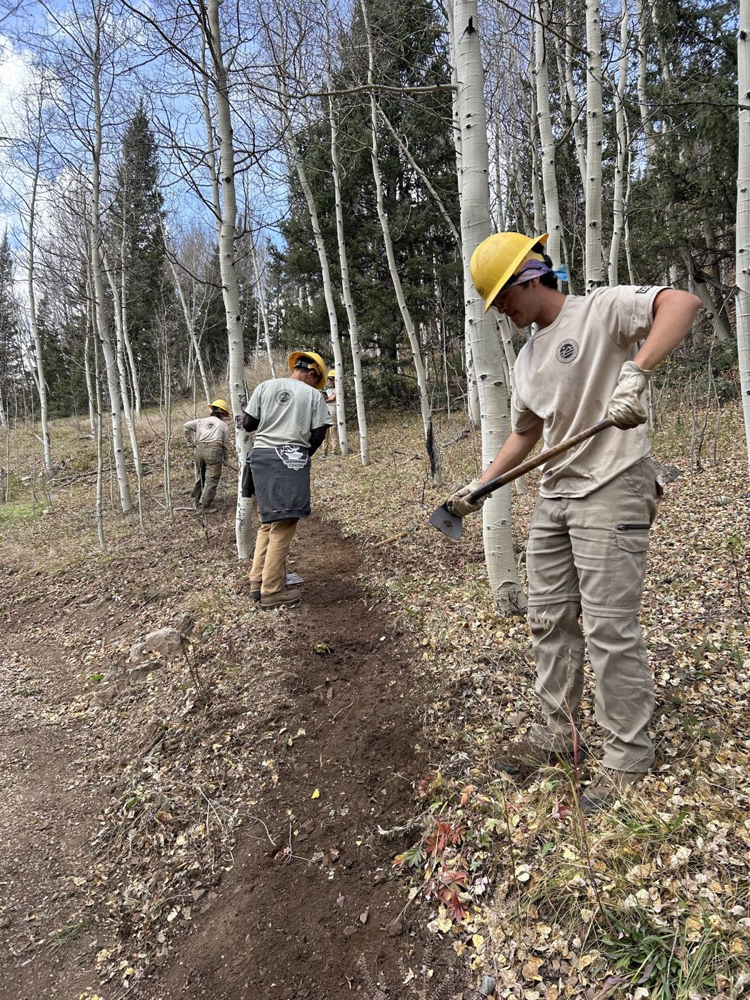
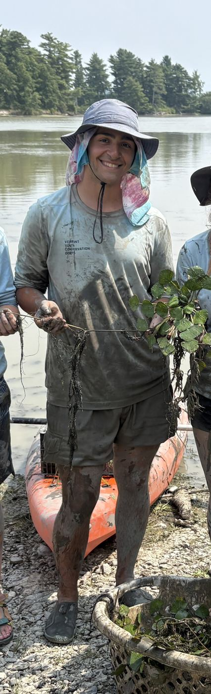

GEOSPATIAL ANALYST
Graduate geoinformatics student combining GIS and conservation field experience to apply spatial analysis to environmental stewardship.

SELECTED WORK / PROJECTS

2,500 Acres in the Adirondacks
A spatial decision-support system that identifies which private parcels New York should acquire to satisfy a 2025 constitutional amendment — ranking parcels (and growing contiguous clusters) under different stakeholder priorities.
Explore the interactive map >>ALL ABOUT ME
GIS analyst with a background in Environmental Conservation and Computer Science. Currently pursuing an M.S. in Geoinformatics at CUNY Hunter College, with a B.Sc. in Computer Science from Bishop's University.
My work sits at the intersection of spatial analysis and resource management. I've applied ArcGIS Field Maps in the field to map aquatic invasive species spread on Lake Champlain, conducted site assessments for watershed restoration at Mesa Verde National Park...
I'm comfortable moving between the field, where the data originates, and the desk, where it gets modeled, analyzed, and mapped for decision makers.


GET IN TOUCH TODAY!
Email: karim.nabahi50@login.cuny.edu
LinkedIn: https://www.linkedin.com/in/karimnabahi/